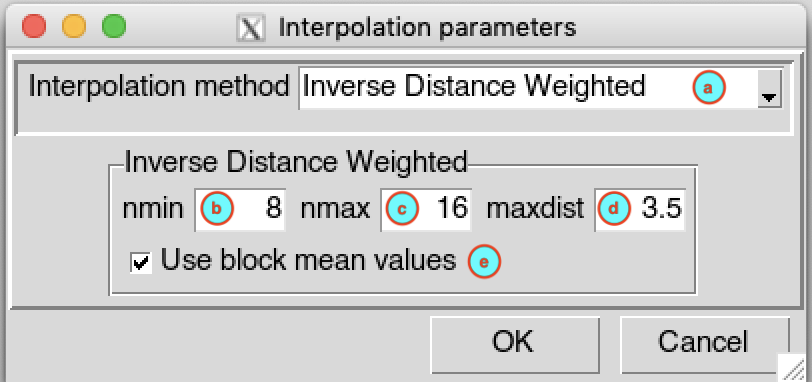
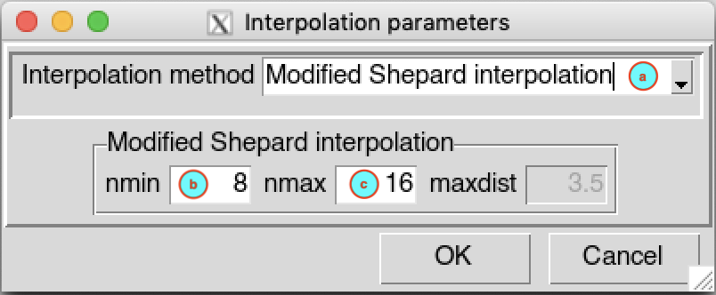
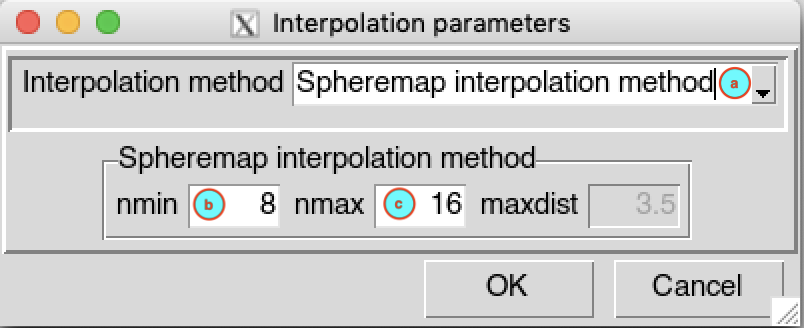
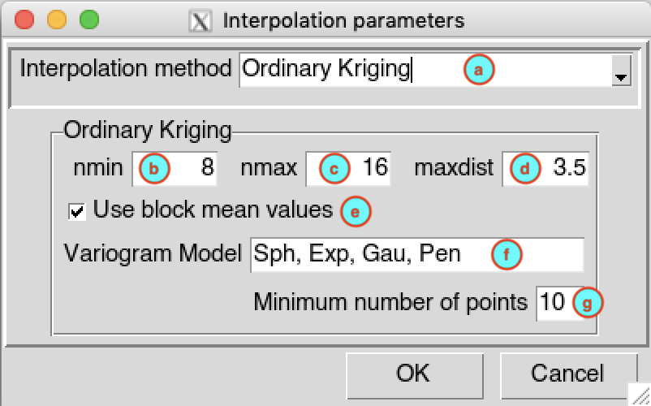
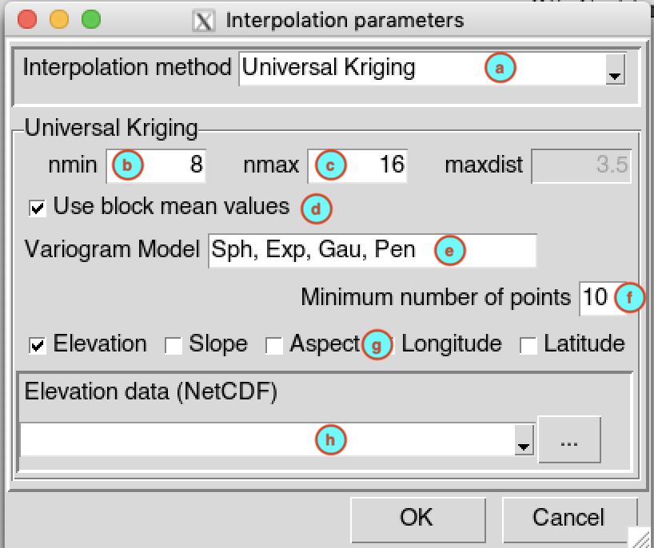
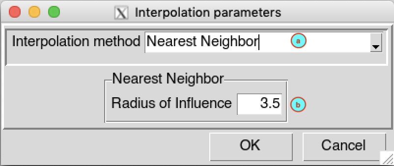
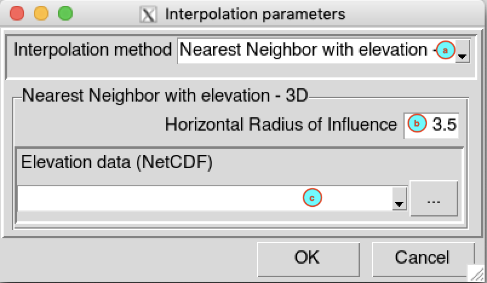

Spatial Interpolation
A spatial interpolation is the estimation of the unknown value of a point by using the measured points in the study area. To interpolate a spatial points data (stations observation) into gridded data, use the menu . It displays a tabbed widget on the left panel, allows to enter the inputs data, set the interpolation parameters and display maps of the interpolated data.
The tab Input Data allows to specify the input station data and the interpolation parameters.
Select the temporal resolution of the input data in CDT stations data format. The available temporal resolution are: minutes, hourly, daily, pentad, dekadal, monthly data and others (seasonal, annual, …).
In case of minutes and hourly, select here the time step of the input data.
Select the CDT station data to interpolate with the drop down list if it is already loaded, or open it through .
Set the start and end date of the period to interpolate. See Setting date range for more details.
Click on the button to set the parameters to be used to interpolate the station data. It opens a dialog box.
CDT has 7 spatial interpolation methods: Inverse Distance Weighted, Ordinary Kriging, Universal Kriging, Modified Shepard interpolation, Spheremap interpolation method, Nearest Neighbor and Nearest Neighbor with elevation - 3D.
By default CDT uses a local interpolation technique, therefore, you have to provide the minimum and maximum number of stations used to interpolate a grid point, and the maximum distance within which the stations are selected. See spatial interpolation methods for further details.
Inverse Distance Weighted
- (a) Select Inverse Distance Weighted as interpolation method from drop down list.
- (b) Enter the minimum number of neighbor stations nmin to interpolate a grid node.
- (c) Enter the minimum number of neighbor stations nmax to interpolate a grid node.
- (d) Enter the maximum distance maxdist (units in decimal degree) to define the search radius used to select the stations to interpolate a grid node.
- (e) Check this box if you want to apply a spatial smoothing to the interpolated data. To define the block type and size, use the function
interpolation.options()on the R console, and change the argumentsblockTypeandblockSize. For more details on how the block is created, see the method CDT used for spatial smoothing.
Modified Shepard interpolation
- (a) Select Modified Shepard interpolation as interpolation method from drop down list.
- (b) Enter the minimum number of neighbor stations nmin to interpolate a grid node.
- (c) Enter the minimum number of neighbor stations nmax to interpolate a grid node.
Spheremap interpolation method
- (a) Select Spheremap interpolation method as interpolation method from drop down list.
- (b) Enter the minimum number of neighbor stations nmin to interpolate a grid node.
- (c) Enter the minimum number of neighbor stations nmax to interpolate a grid node.
Ordinary Kriging
- (a) Select Ordinary Kriging as interpolation method from drop down list.
- (b) Enter the minimum number of neighbor stations nmin to interpolate a grid node.
- (c) Enter the minimum number of neighbor stations nmax to interpolate a grid node.
- (d) Enter the maximum distance maxdist (units in decimal degree) to define the search radius used to select the stations to interpolate a grid node.
- (e) Check this box if you want to apply a spatial smoothing to the interpolated data. To define the block type and size, use the function
interpolation.options()on the R console, and change the argumentsblockTypeandblockSize. For more details on how the block is created, see the method CDT used for spatial smoothing. - (f) Enter the list of candidate variogram models to be selected, the list must be separated by a comma. CDT use the function
autofitVariogramfrom the packageautomapto fit the variogram. The best fitting will be used for the interpolation. A list of all permitted variogram models is available by typingvgm()on the R console. - (g) Enter the minimum number of stations with non-missing data to be used to compute the sample variogram.
Universal Kriging
- (a) Select Universal Kriging as interpolation method from drop down list.
- (b) Enter the minimum number of neighbor stations nmin to interpolate a grid node.
- (c) Enter the minimum number of neighbor stations nmax to interpolate a grid node.
- (d) Check this box if you want to apply a spatial smoothing to the interpolated data. To define the block type and size, use the function
interpolation.options()on the R console, and change the argumentsblockTypeandblockSize. For more details on how the block is created, see the method CDT used for spatial smoothing. - (e) Enter the list of candidate variogram models to be selected, the list must be separated by a comma. CDT use the function
autofitVariogramfrom the packageautomapto fit the variogram. The best fitting will be used for the interpolation. A list of all permitted variogram models is available by typingvgm()on the R console. - (f) Enter the minimum number of stations with non-missing data to be used to compute the sample variogram.
- (g) Check the auxiliaries variables to be used. You can choose between: elevation data; slope and aspect computed from the elevation data, see the function
terrainfrom therasterpackage fro more details; longitude and latitude. - (h) In case you include elevation, slope and/or aspect, you have to provide the elevation data in NetCDF format, select it from the drop-down list if it is already loaded or open it from the browse button .
Nearest Neighbor
- (a) Select Nearest Neighbor as interpolation method from drop down list.
- (b) Enter the maximum distance (units in decimal degree) to define the search radius used to select the station to interpolate a grid node.
Nearest Neighbor with elevation - 3D
- (a) Select Nearest Neighbor with elevation - 3D as interpolation method from drop down list.
- (b) Enter the maximum distance (units in decimal degree) to define the search radius used to select the station to interpolate a grid node.
- (c) Select the elevation data, in NetCDF format, from the drop-down list if it is already loaded or open it from the browse button .
Click on the button to provide the grid to be used to interpolate the data. See grid creation for the grid nodes creation.
In the case where the variable to be interpolated cannot be negative or below a certain value, check
 Change negative values to , enter the value you want to change the negative values in the activated input field.
Change negative values to , enter the value you want to change the negative values in the activated input field.To mask the grid outside a given polygons, check
Blank grid outside the Shapefile , this will activate the drop down list below allowing you to provide the Shapefile to be used. See the blanking options to control the buffer outside the polygons.Specify the folder to save the output by browsing it from the button
 or typing the full path to the folder.
or typing the full path to the folder.
When you finish to set everything in this tab, click on the button to start the interpolation process.
This creates a folder named INTEPORLATION_<file name of station data> under the folder you provided (9) to save the outputs. Inside this folder 2 directories and 1 file are created:
- CDTDATASET: directory containing all the required files used by CDT; for ordinary and universal kriging, the fitted variogram models are saved under this folder inside the file Fitted_variogram.rds
- DATA_NetCDF:directory containing the interpolated data in netCDF format
- SpatialInterpolation.rds: an index file, you will need to reload the outputs of the interpolation if you want to display it later
The tab Maps allows to display the maps of the interpolated data.
If you have already performed the interpolation before and you want to display the maps of the interpolated data,
check Data already computed , this will activated the button allowing you to load the index file of the interpolated data. Browse the file SpatialInterpolation.rds via the open dialog box.Enter the date you want to plot in the input fields then click the button to display the map. You can use the button to display the map of the previous interpolated data and for the next date.
Select the way the map will be displayed, in one panel or a separate panels.
| one panel | separate panels |
|---|---|
Select the type of map to display for the stations data, available options are Points and Pixels. See the type of plot for station data.
Select the type of map to display for the gridded data, available options are Pixels and FilledContour. See the type of plot for gridded data.
Click on the button to change the color bar, title and labels of the maps. For more details on how to change the options, see map options.